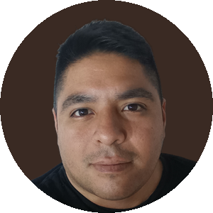

Noviembre · 2023
A una clientase le prendeFUEGOel auto.
Lo único quesobrevivió:su Stanley.
INTACTOacero · doble pared
Y adentro…todavíahabía hielo.
Lo sube a TikTok…
vistas · y contando
Menos de 24 horas después
Stanley frena todoy su presidentele contesta.
Terence Reillypresidente global de Stanley
“Nos encantaríareponerteel auto.”
Terence Reilly, en TikTok · fuente: ABC7
Lo que le valió ese video
Sin pagar un aviso.
fuente: Shorty Awards, caso Stanley
Ventas anuales de Stanley
De US$ 73 Ma US$ 750 M
fuente: CNBC
Historias realesde ventas.Seguime.

Franco Valencia
historias de ventas reales
Seguir
Recreación de la historia real (Stanley, nov. 2023). Modelos 3D: “Burned-out Cars” de kryik1023 y “Mazda CX-5” de tnnv (CC BY 4.0).